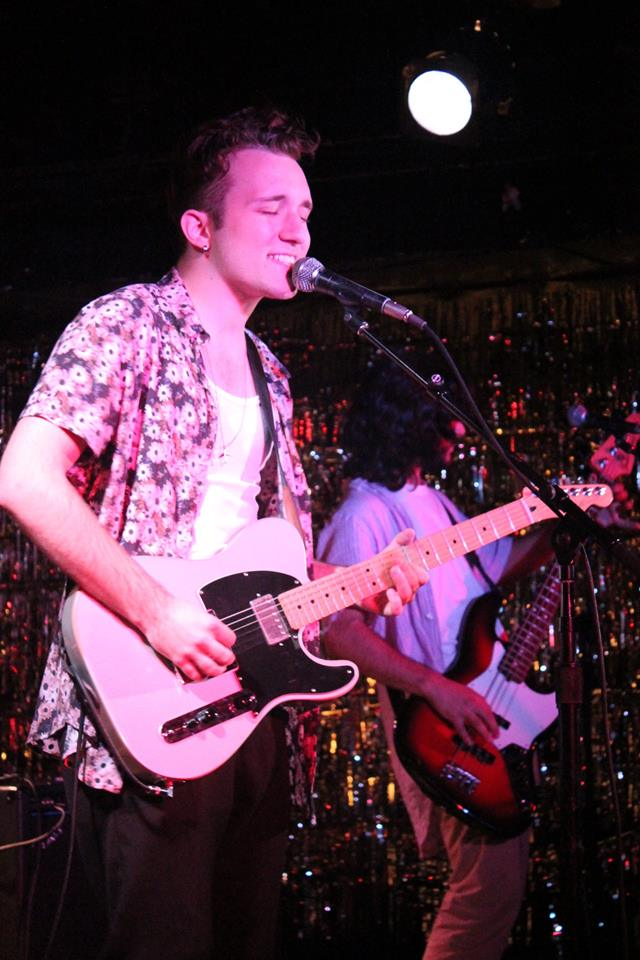
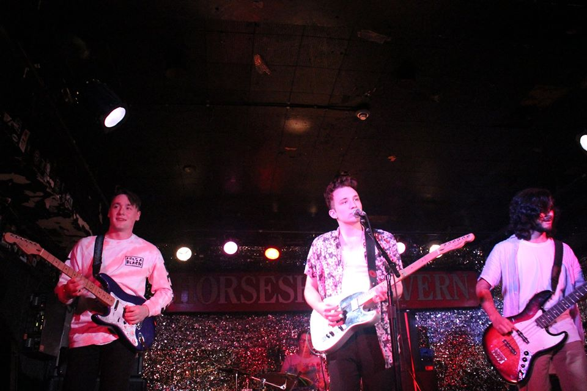

Article By Diana Whistance-Smith Photos by Alina Bykova
Uploaded on November 15, 2015
An eccentric group of four business and arts undergrads come together to form The Cheap Flights, Toronto-based indie band infused with a feel of pop and rock. Ben, Noah, Dan and Nick came together with the help of our very own Musicians@Ryerson, and have been jamming together ever since.
It was Noah’s drummer profile posted on the M@R page that first got him in touch with the band's current lead singer, Dan, and after bringing guitarists into the mix, they were ready to hit centre-stage.
Crediting their inspirations to well-known Toronto start-ups like Born Ruffians, as well as The 1975 and Tokyo Police Club, the group feels their music best reflects the sound of Philadelphia-based band, CRUISR.
Their very first band experience came together during a Ribfest festival, which was heavily dotted with family and friends. Since then, the group has been on the up and up, doing crowd-pleasing shows at Toronto joints like The Rivoli and Horseshoe Tavern, bringing in bigger crowds to every show with the most enthusiastic fans, who have been applauding the group’s epic stage presence and upbeat numbers from their first big-time show.
|
We played our set, but everybody was our fan and they wanted us to play more," Ben and Noah described. They were told to end their set after 25 minutes of playing overtime, but that didn't stop the band from giving their audiences what they came for. "They cut off our vocalists mic too, but we just kept playing." The group’s diverse interests were initially explored through experimenting with other genres, and even picking up instruments on their own. The drummer Noah, spent years playing piano and guitar, literally stumbled upon the drums. "On the side of the road in my hometown of Burlington, there was an old drum kit, so I picked it up and carried it home,” he recalled. “I played that for a year and a half and I bought some better drums and have been playing that ever since." The lively company in attendance at the band's shows give each night the intimate, welcoming vibe present in each of their performances. Most importantly, the band is sure to mingle with their friendly crowds between sets. "We just play our music and hope that people enjoy it. Dan is a great front man, he's good at hyping people up at the shows," Ben said. |
 |

Spotlight Editor in Chief
Alina Bykova
alina.bykova@ryerson.ca
Want to get your time under the lights? Are you a writer looking to join the Artist Spotlight initiative? E-mail us at music@ryerson.ca to see how!